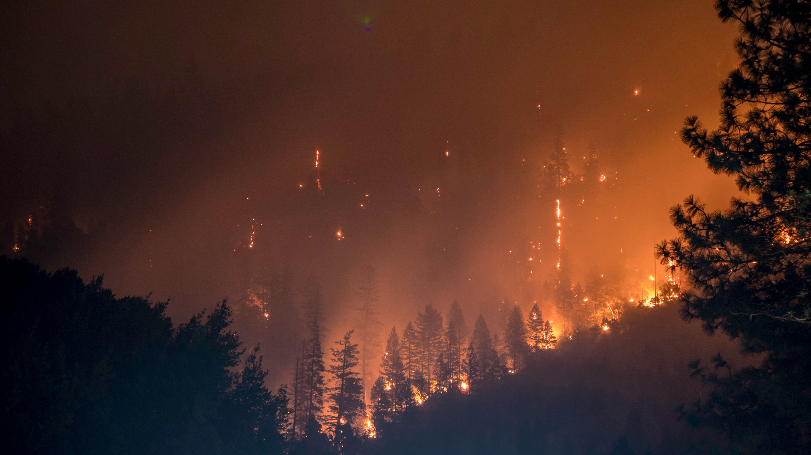
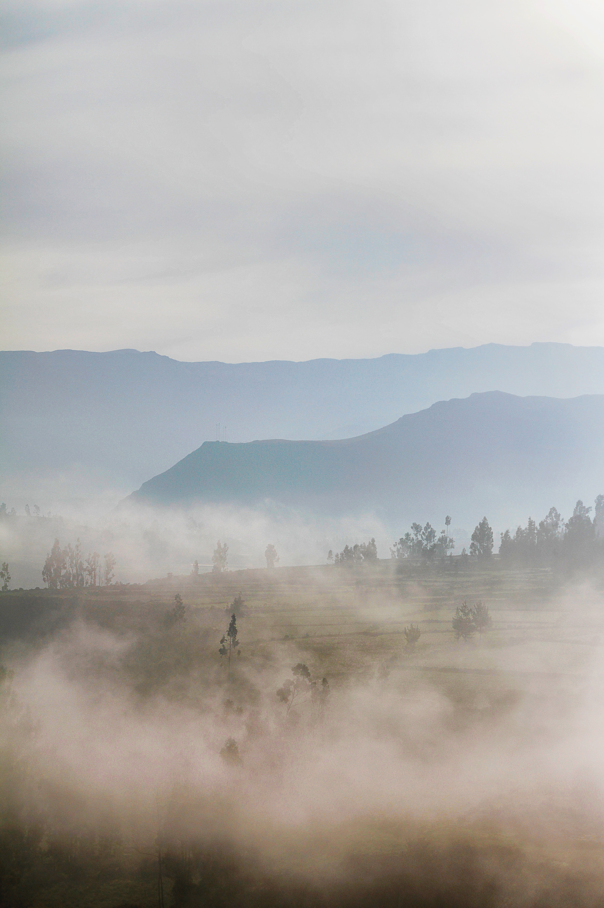

미세먼지는 먼지보다 더 작은 존재로 인체의 점막이나 털등의 방어체계로도 막을 수 없는 작은 존재입니다. 입자 지름에 따라 2가지로 구분하고 있으며, 입자 지름이 10㎛ 이하 먼지를 미세먼지(PM-10), 2.5㎛ 이하먼지를 초미세먼지(PM-2.5)라 정의하고 있다.
대기 중 미세먼지는 다양한 성분들(탄소성분, 황산염, 질산염, 토양성분, 중금속 등)로 구성된 복합물질이며, 그 발생원도 매우 다양할 뿐 아니라 인간의 건강에도 유해한 것으로 알려져 있다. 미세먼지는 세계보건기구(who) 산하 국제암연구소(iarc)가 1급 발암물질로 규정할 정도로 매우 유해한 성분이다.
발생 원인
인위적 미세먼지 발생


자연적 미세먼지 발생
미세먼지의 배출원인은 인위적인 발생과 자연적인 발생으로 구분된다. 인위적인 발생의 원인은 중국발 미세먼지, 공장에서 나오는 매연 쓰레기소각, 가정에서 생선이나 그 외의 것을 구울 때 등이 있다. 자연발생 원인은 모래바람의 먼지, 화산재, 산불이 일 때 발생하는 먼지 등이다. 해염입자 또한 바다 가까이에 위치한 지역에는 많은 영향을 미친다
이렇게 1차적으로 배출된 오염물질은 대기에서 황산화물, 질소산화물, 암모니아 등 일부 고체 형태와 가스 형태로 존재하게 된다. 하지만 여기서 1차 오염물질은 햇빛이나 수분들과 함께 화학반응을 일으켜 2차 미세먼지가 추가로 생성된다.
이 과정에서 화학반응이 일어나기 때문에 더욱 입자가 미세해 지게되어 초미세먼지(PM2.5)가 다량 생성되는 원인으로 작용한다.
2. 황사란?
(사진이름 1,2,3,4 이미지 띄우면서 자막으로 하면 좋을 듯)황사는 주로 봄철에 중국이나 몽골의 사막에 있는 모래와 먼지가 상승하여 편서풍을 타고 멀리 날아가 서서히 가라앉는 현상을 말한다.
황사가 발생하면 철, 망간과 같은 중금속의 농도와 대기 중 세균밀도, 곰팡이 밀도가 높아지기 때문에 기상청에서 예보를 하고 있다.
황사의 물리적 특성
발생지와 이동경로에 따라 발생 및 침적하는 황사입자의 크기와 종류가 다르며 중국이나 몽골은 강풍과 대규모 모래먼지 폭풍에 의한 물리적 영향이 큰 반면, 우리나라와 북한 및 일본의 경우는
미세먼지에 의한 대기환경악화로 인한 영향이 크게 작용한다.
역사상 기록
한국에서 나타나는 황사에 관한 최초의 기록은 삼국시대에서 찾을 수 있다. 당시 신라시대의 아달라왕 21년에 우토라는 기록이 나온다. 여기서 우란 빗방울을 의미한다. 토는 토양을 의미하므로 이는 지금의 황사를 뜻한다 볼 수 있다.
조선왕조실록 명종조를 보면 1550년에 한양에서 흙이 비처럼 떨어졌으며 전라도 지방에는
지붕과 밭, 잎사귀에 누렇고 허연 먼지가 덮였다고 표현되어있다
황사는 왜 봄철에 주로 나타날까?
겨울에 관측되긴 하지만, 황사는 매년 3월부터 5월 사이에 주로 발생한다. 봄이 되면 겨울 내내 얼어 있던 건조한 토양이 녹으면서 잘 부서져 떠다니기 쉬운 20μm 이하 크기의
모래 먼지가 많이 생기기 때문이다. 부서진 모래 먼지는 강한 상승 기류와 함께 떠올라 편서풍을 타고 우리 나라로 이동하게 된다. 이렇게 이동한 황사는 우리 나라 상공의 고기압 배치로 하강 기류를 타고 지표면에 낙하하게 된다.
이처럼 강한 상승 기류, 강한 편서풍 그리고 우리 나라 상공의 고기압 배치 등의 조건이 맞으면 우리나라에 황사 현상이 일어나는데 주로 봄철 특히 4월에 최적의 상태가 되는 것이다.
황사도 도움이 된다?
황사가 악영향만 미치는 것이 아니라 토양이나 해양에 도움을 준다는 주장도 있다. 보통 우리 나라 산림의 토양은
pH 5.2(중성은 pH 7)로 산성화되어 있습니다.
도심의 경우 산성도가 더 심하다. 이에 따라 낙엽이 잘 썩지 않고 토양 속 미생물의 활동이 둔해져
식물의 영양분을 제대로 만들지 못하게 된다. 그러나 황사는 이런 산성 토양을 중성으로 만드는 데 도움을 준다.
또 황사는 바다의 적조 현상을 억제한다. 적조 현상 때는 바다에 황토를 뿌려 플랑크톤이나 적조에 황토가 엉겨 붙어 가라앉게 한다. 황사가 바로 이 황토의 역할을 한다.